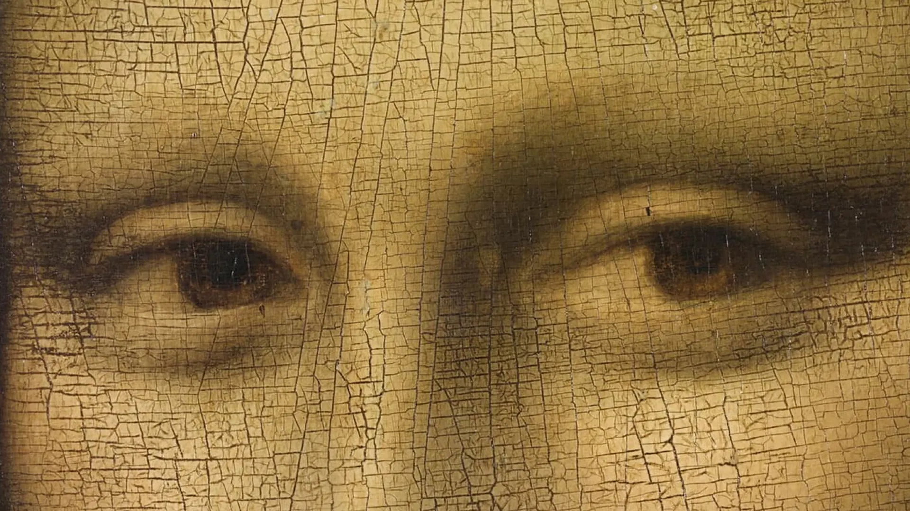
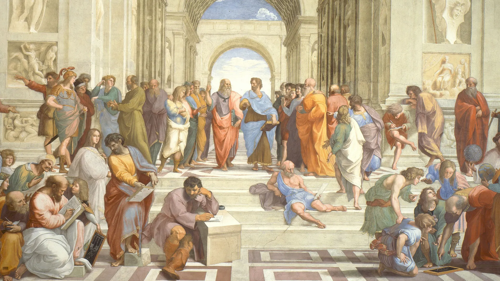
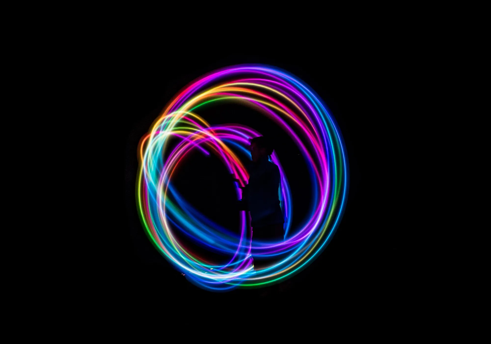
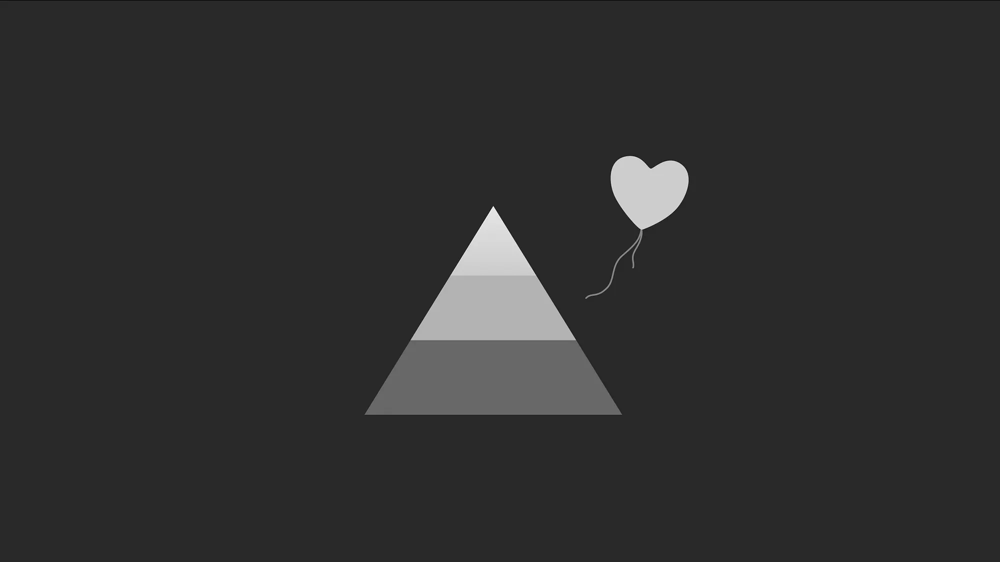
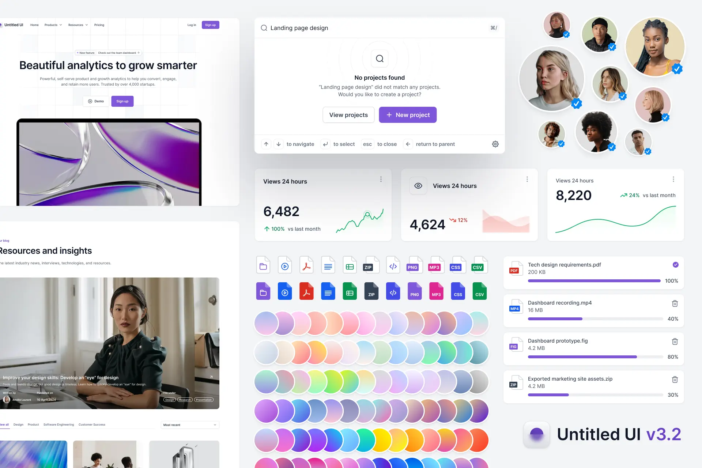
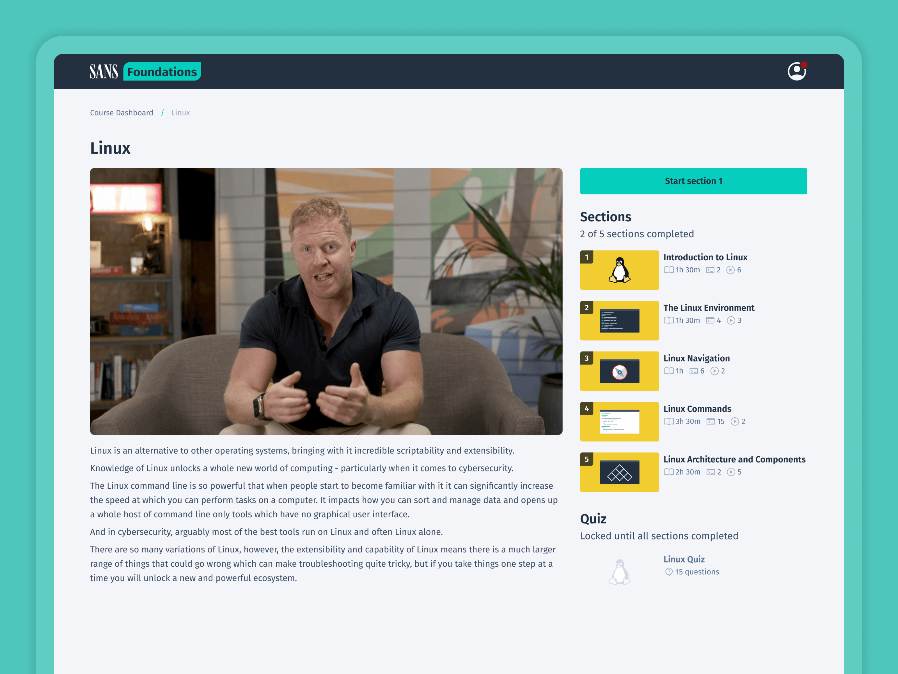
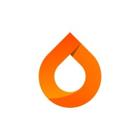
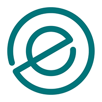
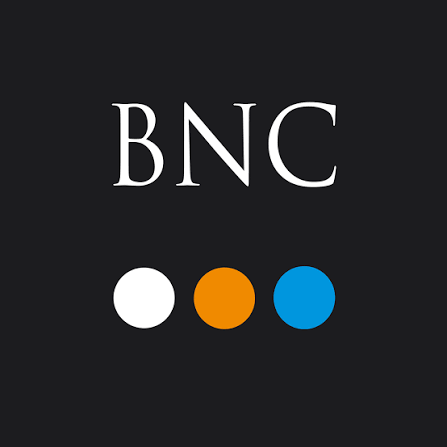

Considered, ethical design
Lead Product Designer at SANS and featured writer for UX Collective. Interested in thoughtful, ethical design and the consequences of the things we build.
Publications
What we can learn from Linear about trusting judgement without ignoring evidence

How our awareness is breaking the social media algorithm

Exploring the modern relevance of Epicurus’ teachings for product designers

What should our design values and principles be, and what’s the difference between them?

Why we all need to take more responsibility for the platforms we design
Projects

A custom design system for the product ecosystem across SANS Product.

Applying behavioural psychology to make a demanding course feel manageable.
Shots
About
I care about making things that are useful, considered and purposeful — and about the decisions that shape them. I'm particularly interested in how technology affects the way people think and behave.
Design isn't simply about solving the immediate problem. It's about considering what happens next. What behaviours will this encourage? Who else might it affect? What happens when the happy path isn't the path people take? I value evidence and research, but also the judgement to know when the obvious answer isn't necessarily the right one. My work has taken me from early-stage startups to established products, across cybersecurity, education, SaaS and event technology. I've worked across product design, research, strategy and design leadership, usually in situations where the problem isn't fully defined and the answer isn't obvious.
I lead product design at SANS, where I work across product and design strategy. Alongside this, I write for UX Collective about design judgement, ethics, systems thinking and human behaviour.

Experience

Countfire
Education and Certifications
View full educationAwards

Event Technology Awards
Speaking

Buyers' Networking Club
Recommendations
Simon is one of the best product designers I've had the pleasure of working with. He's curious, thoughtful, and highly collaborative. He combines strong design thinking with a rare ability to quickly identify deeper product challenges, build scalable systems, and deliver meaningful improvements for users.
Tim AikinSimon combines exceptional product design craft with sharp strategic thinking and a rare ability to bring teams together around a shared vision. Thoughtful, collaborative, and endlessly curious, he elevates not just the product, but the way teams work together to build it.
Joe CrockerCan I just say that this is the sexiest audience engagement solution for live events! Simon, you're one of the most talented Product Designers I know. Big kudos to someone who puts so much love and passion into their work.
Carsten PleiserSimon is an exceptionally talented designer with a rare combination of visual craft, attention to detail, and thoughtful communication. His ability to create elegant, well-balanced experiences, combined with his willingness to share knowledge and mentor others, makes a lasting impact on both products and the designers around him.
Paul Wallas